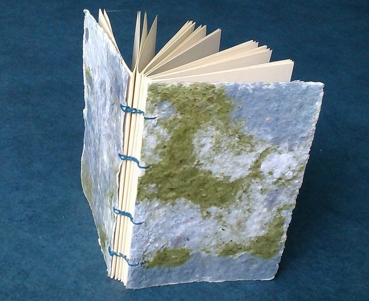

KARYA DAUR ULANG KEYLIGHT
PaperCraft
Buku catatan dari kertas bekas
Pengertian
PaperCraft adalah produk buku catatan yang dibuat dengan memanfaatkan kertas bekas yang masih layak digunakan atau kertas daur ulang. Kertas dapat dikumpulkan, dipilah, dan disusun menjadi buku catatan sederhana. Jika menggunakan kertas bekas yang diolah menjadi bubur kertas, prosesnya memerlukan tahap pembuatan kertas daur ulang.
manfaat
- Mengurangi sampah kardus.
- Membuat tempat alat tulis dari bahan bekas.
- Melatih kreativitas dan keterampilan.
Alat dan Bahan
- Kardus susu bekas yang sudah dibersihkan.
- Gunting atau cutter.
- Lem dan penggaris.
- Kertas warna atau bahan hiasan.
Langkah Kerja
- Bersihkan dan keringkan kardus susu.
- Tentukan ukuran dan bentuk rak pensil.
- Potong kardus sesuai pola.
- Rekatkan bagian-bagiannya hingga kuat.
- Lapisi dan hias agar terlihat rapi.
Estimasi biaya
Biaya alat
| No | Nama alat | harga |
|---|---|---|
| 1 | Gunting | RP0 |
| 2 | Penggaris | Rp0 |
| 3 | Pensil | Rp0 |
| 4 | Pelubang kertas | Rp0 |
| Total biaya alat | Rp0 |
Biaya Bahan
| No | Nama Bahan | harga |
|---|---|---|
| 1 | Kertas bekas | RP0 |
| 2 | Karton bekas | Rp0 |
| 3 | Lem | Rp5.000 |
| 4 | Tali pengikat | Rp3.000 |
| 5 | Kertas hias | Rp5.000 |
| Total biaya bahan | Rp13.000 |